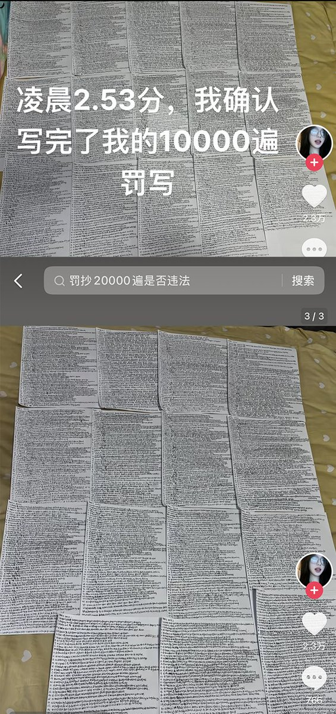
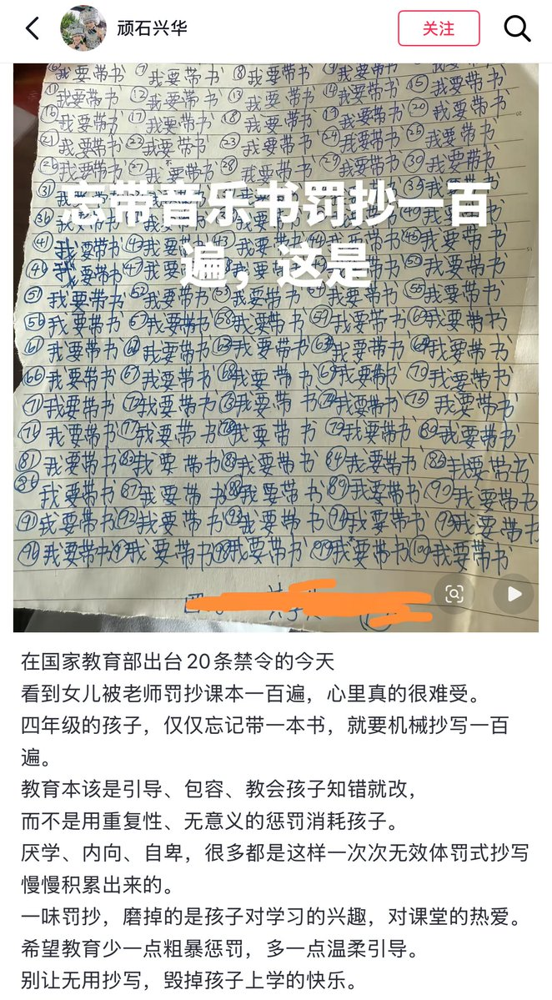

1713✝️
@sss_1713
@whyyoutouzhele 傻逼老师手里有一点权利就会使劲往学生身上使，自己轻飘飘的一句不知道会给学生带来多大的身心负担


李老师不是你老师
@whyyoutouzhele
4月27日，江西南昌。一名小学生只因忘记带跳绳，被老师罚抄中学手册30遍，学生坐在桌前崩溃大哭。
近日，黑龙江一名中学生，被老师罚抄10000遍英语单词，凌晨三点她才抄完。
4月11日，贵州一小学生只因忘记带书，被老师罚抄100遍“我要带书” https://t.co/Zdzi1gb4KP